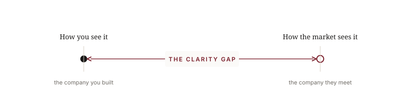
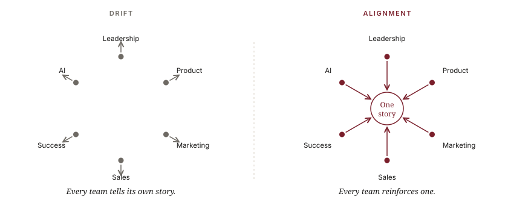
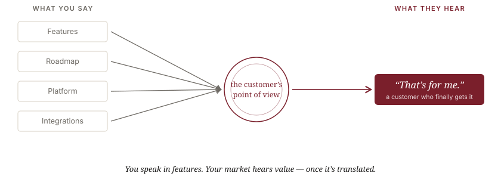

Your customers seea different company than you do.
You’ve grown, or acquired, your way into a company the market no longer quite understands. That distance between what you’ve built and what your market sees has a name: the Clarity Gap. Left unmanaged, it slows growth. I help B2B technology leaders close it, so the market finally meets the company you built.
C-suite operator · 2023 ANA Thought Leader of the Year · 100+ columns for MarTech · Chairman emeritus, Email Experience Council · Nearly three decades across every side of B2B technology
The problem
Growth is where your story can break down.
Every company starts clear. Then it succeeds, and success pulls it out of focus.
As you grow, your company loses the unanimity of its early days. Marketing owns demand. Sales owns pipeline. Product owns the roadmap. Customer Success owns retention. Everyone does their job well. No one owns whether it still adds up to one company, or whether the market still understands it.
These are signs that your story is fragmenting:
- Ask five leaders what you do, and you get five answers.
- Sales and marketing describe the company differently.
- Your website reads like your internal planning meeting, not your customer.
- Prospects like the product but can’t repeat back what makes you different.
- You’re the best-kept secret in your category, great company, quiet market.
- AI is generating activity, not advantage.
These look like separate problems. They’re almost always the same one.
And it doesn’t stay abstract. Left unclosed, the gap shows up where you measure the business: sales cycles stretch, win rates slip, you start competing on price, CAC creeps up, expansion softens, launches underdeliver, analysts misread you, and the AI you’re funding generates activity instead of advantage.
The idea: name it
This is the Clarity Gap.
It’s what opens when a company can no longer tell one story about itself, and starts telling that story to itself instead of to its customer.

It opens from two directions. Inside, your teams drift into their own versions of the company. Outside, you get so fluent in your own language that you forget your market doesn’t speak it. Same gap, two causes. The wider it gets, the harder everything gets: sales works harder for the same win, marketing gets busier without moving the business, good companies go quiet.
How I close the Clarity Gap
The gap opens from two sides. I close it from both.
Alignment gets your company telling one story. Translation makes sure your market hears it.
Go-to-Market Alignment

Your teams have drifted into six versions of the company. I get leadership, product, marketing, sales, customer success, and AI back to one, so the story holds together from the inside out.
Go-to-Market Translation

You know exactly who you are. Your market doesn’t. I deconstruct your go-to-market and rebuild it into a message, and a customer relationship, the market values, so the people you’re built for finally understand why you matter.
Ways to work together
Where your gap is, is where we start.
The Clarity Sprint
A focused, 30-day outside read that finds where your gap is, inside, outside, or both, and the few moves that close it.
Go-to-Market Alignment
The internal engagement: get every customer-facing team telling one story, using the six-part method.
Go-to-Market Translation
The external engagement: deconstruct your go-to-market and rebuild it so the market finally knows, understands, and values you.
Why me
I can see the gap because I’ve worked every side of it.
I’ve been the vendor, the client, and the agency. I’ve led marketing and I’ve run a company, most recently as CEO of RPE Origin. I’ve carried a P&L, advised boards, and worked through acquisitions. Inside a company, everyone plays their own square of the board. I’ve spent nearly three decades learning to read the whole board.
Across all of it, the real work comes down to the same challenge: translating a company so its market finally understands it. People met me through email, then CRM, then AI, but the job was always translation.
And I don’t work alone when the work calls for it. Nearly three decades in this industry means I’ve built a deep bench of senior specialists I can bring in when an engagement needs one, a deliverability expert, a data engineer, a migration lead, matched to the problem. You get one senior point of accountability, me, and access to all the right people.
Selected work Sherwin-Williams · TJ Maxx · Synchrony Financial · HP · FedEx · Capital One · Microsoft · Wells Fargo · Allstate · Sam’s Club · lululemon
Questions
The short version.
What is the Clarity Gap?
The Clarity Gap is the distance between how a company understands itself and how its market experiences it. It opens as you grow, teams specialize and drift into different versions of the story, and leadership gets so fluent in its own language that it forgets the market doesn’t speak it.
What’s the difference between Alignment and Translation?
Alignment is internal: getting every customer-facing team (leadership, product, marketing, sales, customer success, and AI) telling one story. Translation is external: rebuilding your go-to-market so the market understands and values that story. Most companies need some of both.
What is a fractional CMO or Chief Market Strategist?
A senior marketing leader engaged part-time, bringing executive-level go-to-market judgment and direction for a growth-stage company, without the cost or commitment of a full-time hire.
How do I know if my company has a positioning problem?
A few signs: ask five leaders what you do and you get five answers; your website reads like an internal planning meeting; prospects like the product but can’t repeat what makes you different; or you’re a strong company that’s somehow invisible in your market.
What companies do you work with?
Growth-stage and enterprise B2B technology companies (SaaS, martech, data, AI, and customer engagement) whose leaders sense the company has outgrown the way it explains itself.
If your company has outgrown the way you explain it, let’s talk.
No pitch. A conversation about where you are, where you’re going, and what’s getting in the way.
Schedule a Conversation